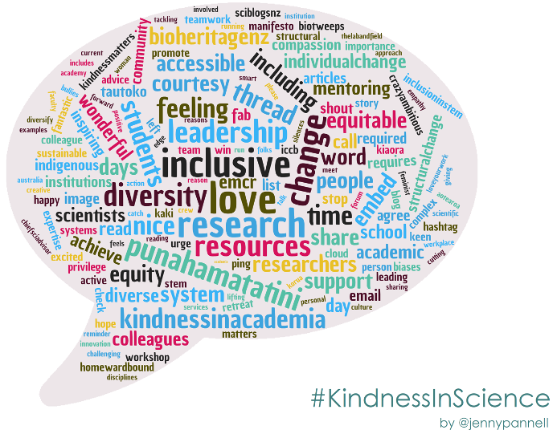

Everyone here is smart; distinguish yourself by being kind.

In-person in Science Bldg, Rm 149.
Please see section 20 for tentative timetable for this course.
Our priority is your safety!
The following rules apply for in-person classes:
For more information consult the BSU campus guidelines.
The goal of this course is to provide students with the theoretical and applied knowledge in genomics and bioinformatics to sequence, assemble and annotate genomes, especially for non-model organisms (see Figure 4.1). To provide an authentic research experience, we will be using examples from the instructor’s research on sagebrush (Artemisia tridentata; Asteraceae) genomics (e.g. Melton et al., 2021).
Figure 4.1: Overview of the structure of the course. See text for more details.
A suite of unix-based open source software will be used to perform genomic analyses (see Figure 4.2). In addition to learning how to execute these programs, students will also be taught procedures to install them therefore gaining critical expertise for their career. Finally, students will produce scientific reports and present their results therefore promoting developing their dissemination skills. Reports together with documents provided by the instructor will provide students with a framework allowing them to analyze their own genomic data.
Figure 4.2: Overview of an example of an approach applied to produce a draft genome assembly. In this course, students will become accustomed with such approach and master some specific key steps.
This course provides a mixture of classic lectures together with more applied, hands-on bioinformatic tutorials (conducted both during lecture and lab sessions). Tutorials are designed to support students in mastering theoretical genomic concepts through their implementations in bioinformatic protocols. As mentioned above, the genomic field heavily relies on bioinformatic expertise, especially related to unix-based software.
We will be working on computers running the Ubuntu Linux operating system. This operating system is widely used in genomic research. Using these computers will provide opportunities for students to become familiar with bash/shell, Python and R and they provide an on-ramp to using research computing clusters (e.g. BSU Borah research cluster). Finally, lecture sessions will also serve as a platform to:
While reading scientific papers, we will be focusing on mastering methodological concepts allowing students to assess the quality and reproducibility of published genomic studies.
The course is subdivided into nine chapters segregated between lecture and laboratory sessions as follows (see Figure 4.1):
Lecture sessions:
Laboratory sessions:
Please find below a non-exhaustive list of learning outcomes associated to the chapters presented above (Figure 4.1):
Chapter 1: DNA & RNA
Chapter 2: Next-generation sequencing
Chapter 3: Genome databases
Chapter 4: Genome assembly
Chapter 5: Transcriptome assembly
Chapter 6: Structural annotation
Chapter 7: Functional annotation
Chapter 8: Comparative genomics
Chapter 9: Applied Bioinformatics
In this chapter, we will be using data produced by the instructor’s lab to learn protocols to:
Please see section 20 for tentative timetable associated to these chapters.
BIOL 310 GENETICS (3-0-3)(F,S,SU). A study of the principles of genetics as they relate to living organisms. PREREQ: BIOL 191-192 or BIOL 191 and BIOL 320. PRE/COREQ: CHEM 301 or 307.
The reading material at the basis of this class is composed of a mixture of publications and chapters from four textbooks (Dale et al., 2012; deSalle and Rosenfeld, 2013; Brown, 2017; Lesk, 2017). The instructor has copies of these textbooks and students are welcome to consult them at anytime.
A list of references used in this course is provided here.
In addition, there is also a plethora of website devoted to genomic and transcriptomic data. Please find a selection below:
Although we will be using software installed on the Linux computers, the instructor is advising students to install the following programs on their personal computers:
As shown above, R and RStudio are at the core of this course and will have to be installed on your computers. This can be easily done by downloading the software from the following websites:
There is a preview release of RStudio including a new visual Markdown editing mode, which is handy when you are using this program extensively. You can download it here, but this version might not be as stable as the other version made available on the main webpage (see above).
The download webpages for these software have comprehensive information on how to install them, so please refer to those pages for more information.
If you are planning to create LaTeX documents, you will need to install a Tex distribution. Please refer to this website for more details: https://www.latex-project.org/get/
If you want to create Markdown documents you can separately install the rmarkdown package in R (see below for more details).
We will be using a number of R packages especially designed to support reproducible research. Many of those packages are not included in the default R installation and will need to be installed separately.
To install key packages used in class, copy the following code and paste it into your R console:
install.packages(c("brew", "countrycode", "devtools", "dplyr", "ggplot2", "googleVis",
"knitr", "rmarkdown", "tidyr", "xtable"))Once you enter this code, you may be asked to select a CRAN “mirror” to download the packages from. Simply select the mirror closest to you.
Finally, it is highly likely that we will have to install additional packages. In this case, you can simply install it by using the same R function install.packages() or by using RStudio as follows: Select “Tools” -> “Install Packages …” and then type the name of the package in the window (make sure to tick the “Install dependencies” box).
RStudio provides a suite of cheat sheets that can be accessed by going to the “Help” menu and selecting “Cheatsheets.”
Five cheat sheets are especially relevant to chapters taught in this course:
Please find below two documents providing a comprehensive introduction to R:
The aim of the journal club is to train students to read scientific publications related to genomic data. Journal clubs will also provide opportunities for students to learn how to present their scientific publications.
Students are expected to have read the scientific publications before coming to class. The instructor will start by briefly summarizing the methodology and main outcomes of the study and the rest of the class will be devoted to general discussion (please come with some questions and have a critical, but positive mind set).
Please find below the list of publications that we will discuss in class (see section 20 for information on dates):
pdf format) of this publication can be downloaded here.If you are not familiar with approaches to read scientific publications, please come and seek advice. For undergraduate students, there is a class BIOL 306 that you could take next semester. Please find below the details of this class:
BIOL 306 COMMUNICATION IN THE BIOLOGICAL SCIENCES (3-0-3)(F,S)(CID) Development of written and oral communication skills necessary for future careers in the biological sciences. Skills include summarizing and evaluating scientific research, and communicating scientific information to targeted audiences. PREREQ: BIOL 304 and ENGL 101, 102.
Exams are summing to a total of 350 points and grading will follow the scale presented in Table 13.1. Consult the Timetable for information on dates when assignments are due.
| Percentage | Grade |
|---|---|
| 100-98 | A+ |
| 97.9-93 | A |
| 92.9-90 | A- |
| 89.9-88 | B+ |
| 87.9-83 | B |
| 82.9-80 | B- |
| 79.9-78 | C+ |
| 77.9-73 | C |
| 72.9-70 | C- |
| 69.9-68 | D+ |
| 67.9-60 | D |
| 59.9-0 | F |
To further gain expertise in this field, students will be producing three mini-reports on the following topics (see Figure 4.1):
Time will be allocated in class to work on these mini-reports, but the instructor expects students to complete those on their own time.
The webpage dedicated to the Mini Reports is available here.
Each student will have to present a scientific publication at the end of the semester related to material presented in Chapter 8. Time will be allocated to select a paper and work on presentations, but the instructor strongly advise students to start this endeavor sooner. The presentation should not exceed 4 minutes (plus 2 minutes for questions) and contain a maximum of 5 slides.
Students will be working in groups to produce a report associated to the following research question:
What Aquaporin genes are encoded in the sagebrush genome (Artemisia tridentata) and what are their functions?
To gain further insights into Aquaporins and sagebrush and the bioinformatic analyses, students will be reading this companion publication (Melton et al., 2021).
Students can access bash and R scripts associated to their lab report here.
Lab reports will be formal documents written in the form of scientific manuscripts (Introduction, Material & Methods, Results, Discussion and References sections).
The instructor does not fix a minimum number of words or pages, but urges students to be succinct and avoid redundancy.
Please make sure that you present all evidence allowing an external reviewer to replicate your analyses. In order to achieve this goal and support reproducible science, students will have to provide associated data and code underpinning their research. The instructor will provide guidance on these protocols during lab sessions.
Please note that if students are working in group then each student should contribute equally to the project. If participation is not judge adequate within a group, then the instructor will grade students individually.
Students will use their lab reports to prepare 10 minutes presentations (+ 5 minutes for questions) taking place during the final weeks of the semester.
The instructor expects each student to take part to the presentation and to be involved in answering questions.
Presentations will have to be deposited in advance onto a shared Google drive folder or be sent to the instructor prior to the presentation.
For students interested in getting some extra credits, the instructor will provide two opportunities to score a total of 30 extra credits. Students will be able to allocate these extra credits to any of their tests (by sending an email to the instructor with credits allocation). These two non-mandatory assignments have strict deadlines (see Timetable). This means that the instructor will consider that if students have not turned-in their assignment on time that they are not interested in getting extra credits. To facilitate students’ time management, credits allocated to each question will be provided. These opportunities should provide students with the ability to claim extra credits (and therefore improve their overall grade) while also learning about several aspects of genome assembly and annotation. As usual, students can work in groups, but they have to submit individual assignments.
The non-mandatory assignments will be accessible here:
The instructor expects students to deliver their assignments on time and set enough time aside to work on their projects (see above for more details). However, if you have any issues preventing completion of your work on time, please contact the instructor as soon as possible to find common solutions.
The remote teaching mode of this course makes it harder for the instructor to take attendance. The instructor is expecting students to attend classes (please join on time and for the full duration of the class) and actively engage by asking questions and giving feedback on teaching material and course content. This course was designed to help students implementing a reproducible approach to their thesis projects. If you are judging that additional content should be covered in class, please contact the instructor. The instructor will do his very best to obtain information or seek support from colleagues to cover the requested material. Finally, the instructor is aware that COVID could potentially impact yourselves and your families. In the case that you have any issues attending class, please contact the instructor by email (svenbuerki@boisestate.edu) asap and see below for more details.
The instructor will be prepared for class, on time and not leave early. He will also be respectful of you and your opinions. Overall, the instructor wants to foster a kind and respectful class environment where all students can express themselves and share their opinions. This means that meaningful and constructive dialogue is encouraged in this class and it requires a degree of mutual respect, willingness to listen, and tolerance of opposing points of view. Respect for individual differences and alternative viewpoints will be maintained at all times in this class. One’s words and use of language should be temperate and within acceptable bounds of civility and decency. Finally, the instructor will reply to emails and grade tests as soon as possible (and provide positive criticism) to allow students mastering the material presented in class.
The instructor has developed this course to provide a welcoming environment and effective, equitable learning experience for all students. If you encounter barriers in this course, please bring them to my attention so that I may work to address them.
Students in this class represent a rich variety of backgrounds and perspectives. The Biological Sciences department is committed to providing an atmosphere for learning that respects diversity and creates inclusive environments in our courses. While working together to build this community, we ask all members to:
Please let the instructor know of your preferred or adopted name and gender pronoun(s), and he will make those changes to his own records and address you that way in all cases.
To change to a preferred name so that it displays on all BSU sites, including Blackboard and the course roster, contact the Registrar’s Office at (208) 426-4249. Note that only a legal name change can alter your name on BSU official and legal documents (e.g., your transcript).
The instructor recognizes that navigating your education and life can often be more difficult if you have disabilities. I want you to achieve at your highest capacity in this class. If you have a disability, the instructor needs to know if you encounter inequitable opportunities in this course related to: - Accessing and understanding course materials. - Engaging with course materials and other students in the course. - Demonstrating your skills and knowledge on assignments and exams.
If you have a documented disability, you may be eligible for accommodations in all of your courses. To learn more, make an appointment with the university’s Educational Access Center.
The instructor recognizes the unique challenges that can arise for students who are also parents or guardians of children. If you have any specific needs related to this topic, please contact the instructor asap.
To create a welcoming, engaging, and effective learning environment, the instructor expects all of us to exhibit behavior that reflects Boise State’s Statement of Shared Values. The Shared Values emphasize academic excellence, caring, citizenship, fairness, respect, responsibility, and trustworthiness. In keeping with these values, the instructor expects students in this course to uphold the standards outlined in the Boise State University Student Code of Conduct.
If you are struggling for any reason (COVID, relationship, family, or life’s stresses) and believe these may impact your performance in the course, the instructor is encouraging you to contact the Dean of Students at (208) 426-1527 or email deanofstudents@boisestate.edu for support. Additionally, if you are comfortable doing so, please reach out to me and I will provide any resources or accommodations that I can. If you notice a significant change in your mood, sleep, feelings of hopelessness or a lack of self worth, consider connecting immediately with Counseling Services (1529 Belmont Street, Norco Building) at (208) 426-1459 or email healthservices@boisestate.edu.
The university has many resources designed to support you as a learner and human being. Among these are:
Albertsons Library provides a treasure trove of physical and electronic resources.
The Writing Center offers individual consultations tailored to your needs, including making sense of writing assignment instructions, brainstorming, crafting a thesis, organizing an essay, revisions, citations, and more.
Counseling Services helps you tap into your strengths and find resources to deal more effectively with concerns that impact your pursuit of personal and academic goals. It emphasizes prevention and early detection and provides a broad spectrum of short-term counseling, consultative, evaluative, teaching, and training functions. Counseling staff consists of licensed counselors, psychologists, and closely supervised trainees/post-graduate interns.
The Gender Equity Center provides specialized, brief, no-cost, confidential support for campus members affected by:
Multicultural Student Services works with all students interested in equity and social justice, students from different cultures, countries and ethnicities. The staff understands cultural differences and perspectives, and knows what it’s like living in a dominant culture. The training and the programs Multicultural Student Services provides can help you navigate through political correctness and into respectful dialogue. This center also provides:
Food assistance: If you are hungry and cannot afford to purchase food, the campus has some resources to help you. You can visit the campus food pantry or get free meals in the campus dining hall.
A tentative timetable for the Spring semester 2022 is presented in Table 20.1.
| WeekID | Date | Weekday | Topic | Task / Deadline | |
|---|---|---|---|---|---|
| 1 | 2022-01-12 | Wednesday | Syllabus | ||
| 1 | 2022-01-14 | Friday | Chapter 1 | ||
| 2 | 2022-01-19 | Wednesday | Chapter 1 / Chapter 2 | ||
| 2 | 2022-01-21 | Friday | Mini-Report 1 | ||
| 3 | 2022-01-26 | Wednesday | Chapter 2 / Mini-Report 1 | Read Giant panda publication for Journal Club (on Google Drive) | |
| 3 | 2022-01-28 | Friday | Journal Club: Pub. #1 | ||
| 4 | 2022-02-02 | Wednesday | Chapter 3 | ||
| 4 | 2022-02-04 | Friday | Chapter 3 / Mini-Report 2 | Turn-in Mini-Report 1 (by 5PM MT) | |
| 5 | 2022-02-09 | Wednesday | Mini-Report 3 - PART1 | Install FinchTV | |
| 5 | 2022-02-11 | Friday | Mini-Report 3 - PART1 | ||
| 6 | 2022-02-16 | Wednesday | Mini-Report 3 - PARTS 2-3 | Install R, RStudio and rentrez and Install MEGA | |
| 6 | 2022-02-18 | Friday | Mini-Report 3 - PARTS 2-3 | Turn-in Mini-Report 2 (by 5PM MT) | |
| 7 | 2022-02-23 | Wednesday | Mini-Report 3 - PART3 | ||
| 7 | 2022-02-25 | Friday | Mini-Report 3 - PART3 | ||
| 8 | 2022-03-02 | Wednesday | Mini-Report 3 - Work on Reports | ||
| 8 | 2022-03-04 | Friday | Chapter 4 - Introduction to de novo genome assembly | If you have a PC: Install Putty | |
| 9 | 2022-03-09 | Wednesday | Group accounts & Introduction to Linux OS | ||
| 9 | 2022-03-11 | Friday | Mining genome: Set-up project & BLAST analysis | ||
| 10 | 2022-03-16 | Wednesday | Mining genome: Extract scaffolds & identify ORFs | ||
| 10 | 2022-03-18 | Friday | Mining genome: Annotating ORFs & identifying ORFs associated to target genes | Turn-in Mini-Report 3 (by 5PM MT) | |
| 12 | 2022-03-30 | Wednesday | Mining genome: Annotating ORFs & identifying ORFs associated to target genes | Groups submit preliminary lab reports for comment | |
| 12 | 2022-04-01 | Friday | Mining genome: Validate AQP protein sequences and infer their function(s) | ||
| 13 | 2022-04-06 | Wednesday | Chapter 4 - PARTS 1-2 | Students submit their publications for approval by instructor | |
| 13 | 2022-04-08 | Friday | Chapter 4 - PART3 & Chapter 7 | Read pubs. for chapters 5 & 6 | |
| 14 | 2022-04-13 | Wednesday | Mining genome: Group work | ||
| 14 | 2022-04-15 | Friday | Mining genome: Group work | ||
| 15 | 2022-04-20 | Wednesday | Finalize group reports & work on ind. oral presentations (chapter 8) | ||
| 15 | 2022-04-22 | Friday | Students oral presentations (on comparative genomics; chapter 8) | ||
| 16 | 2022-04-27 | Wednesday | Students oral presentations (on comparative genomics; chapter 8) | ||
| 16 | 2022-04-29 | Friday | Mining genome - Oral group presentations | Turn-in lab reports (by 5PM MT) |
Citations of all R packages used to generate this report.
[1] J. Allaire, Y. Xie, J. McPherson, et al. rmarkdown: Dynamic Documents for R. R package version 2.6. 2020. <URL: https://github.com/rstudio/rmarkdown>.
[2] C. Boettiger. knitcitations: Citations for Knitr Markdown Files. R package version 1.0.10. 2019. <URL: https://github.com/cboettig/knitcitations>.
[3] M. C. Koohafkan. kfigr: Integrated Code Chunk Anchoring and Referencing for R Markdown Documents. R package version 1.2. 2015. <URL: https://github.com/mkoohafkan/kfigr>.
[4] R Core Team. R: A Language and Environment for Statistical Computing. R Foundation for Statistical Computing. Vienna, Austria, 2019. <URL: https://www.R-project.org/>.
[5] H. Wickham and J. Bryan. usethis: Automate Package and Project Setup. R package version 2.0.0. 2020. <URL: https://CRAN.R-project.org/package=usethis>.
[6] H. Wickham, R. François, L. Henry, et al. dplyr: A Grammar of Data Manipulation. R package version 1.0.2. 2020. <URL: https://CRAN.R-project.org/package=dplyr>.
[7] H. Wickham, J. Hester, and W. Chang. devtools: Tools to Make Developing R Packages Easier. R package version 2.3.2. 2020. <URL: https://CRAN.R-project.org/package=devtools>.
[8] Y. Xie. bookdown: Authoring Books and Technical Documents with R Markdown. ISBN 978-1138700109. Boca Raton, Florida: Chapman and Hall/CRC, 2016. <URL: https://github.com/rstudio/bookdown>.
[9] Y. Xie. bookdown: Authoring Books and Technical Documents with R Markdown. R package version 0.21. 2020. <URL: https://github.com/rstudio/bookdown>.
[10] Y. Xie. Dynamic Documents with R and knitr. 2nd. ISBN 978-1498716963. Boca Raton, Florida: Chapman and Hall/CRC, 2015. <URL: https://yihui.org/knitr/>.
[11] Y. Xie. formatR: Format R Code Automatically. R package version 1.7. 2019. <URL: https://github.com/yihui/formatR>.
[12] Y. Xie. “knitr: A Comprehensive Tool for Reproducible Research in R.” In: Implementing Reproducible Computational Research. Ed. by V. Stodden, F. Leisch and R. D. Peng. ISBN 978-1466561595. Chapman and Hall/CRC, 2014. <URL: http://www.crcpress.com/product/isbn/9781466561595>.
[13] Y. Xie. knitr: A General-Purpose Package for Dynamic Report Generation in R. R package version 1.30. 2020. <URL: https://yihui.org/knitr/>.
[14] Y. Xie and J. Allaire. tufte: Tufte’s Styles for R Markdown Documents. R package version 0.9. 2020. <URL: https://github.com/rstudio/tufte>.
[15] Y. Xie, J. Allaire, and G. Grolemund. R Markdown: The Definitive Guide. ISBN 9781138359338. Boca Raton, Florida: Chapman and Hall/CRC, 2018. <URL: https://bookdown.org/yihui/rmarkdown>.
[16] Y. Xie, C. Dervieux, and E. Riederer. R Markdown Cookbook. ISBN 9780367563837. Boca Raton, Florida: Chapman and Hall/CRC, 2020. <URL: https://bookdown.org/yihui/rmarkdown-cookbook>.
[17] H. Zhu. kableExtra: Construct Complex Table with kable and Pipe Syntax. R package version 1.2.1. 2020. <URL: https://CRAN.R-project.org/package=kableExtra>.